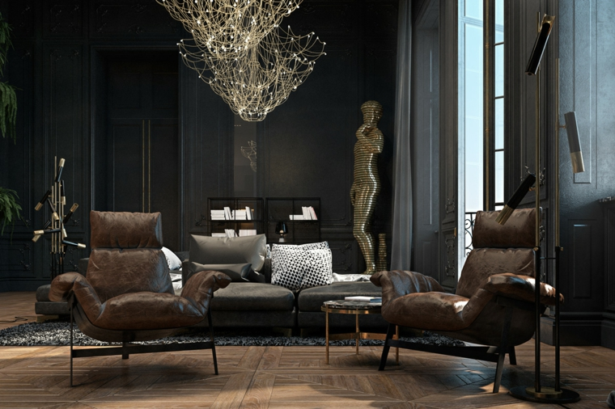
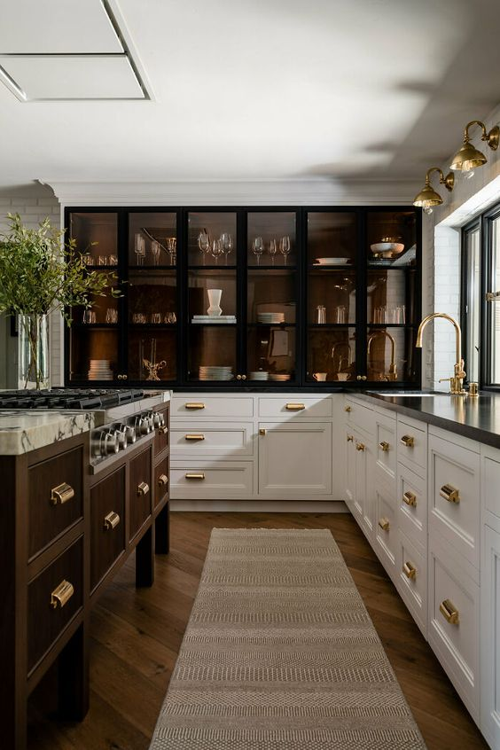
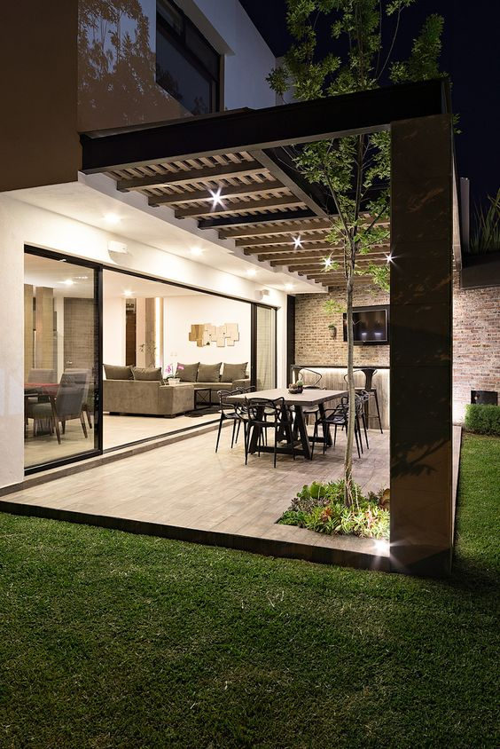

Diseños de Interiores
Contamos con los mejores diseñadores del mercado que pueden satisfacer todas tus necesidades a la hora de diseñar un lugar acorde al lugar que elijas. Lo mejor del mercado en diseños de living y oficinas.
Diseños de Cocinas
En nuestra sección de cocinas encontraran lo último en tecnología para cocina y comodidad a la hora de preparar productos como de tener almuerzos y cenas con amigos o familiares, destacamos en la innovación y desarrollo de calidad producto servicio.
Diseño de Exteriores
La más amplia gama de cerámicos, plantas y maderas de todo tipo y región trabajamos con encargo previo. Plantas, plantones y árboles de toda la región, maderas seleccionada y la mejor calidad en cemento y cerámicos de todas las densidades tanto para patios como garajes de interior y exterior.
